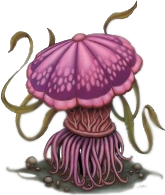

Hongo violeta
Planta mediano, no alineado
Armadura 5
Puntos de vida 18 (4d8)
Velocidad 5 pies
| FUE | DES | CON | INT | SAB | CAR |
|---|---|---|---|---|---|
| 3 (-4) | 1 (-5) | 10 (+0) | 1 (-5) | 3 (-4) | 1 (-5) |
Sentidos visión verdadera 30 pies (ciego a partir de ese punto), Percepción pasiva 6
Idiomas ---
Desafío 1/4 (50 XP)
Falsa apariencia. Mientras que el hongo violeta permanezca sin moverse, no se le distinguira de los hongos ordinarios
Acciones
Ataque múltiple. El hongo realiza 1d4 ataques de toque de podredumbre
Toque de podredumbre. Ataque con arma de mele: +2 a golpear, alcance 10 pies, un objetivo. Golpe: 4 (1d8) daño necrótico
